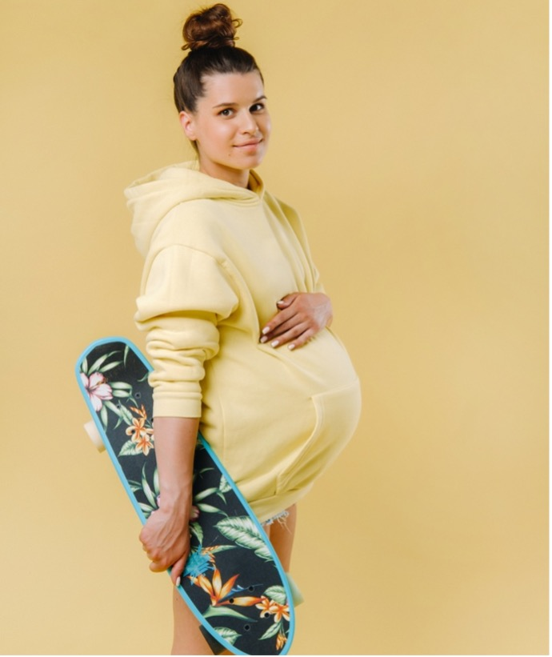

| ID | Construction | Illustration |
|---|---|---|
| 1133 | мягко говоря, Cl | Миша, мягко говоря, не подарок. |
| 934 | грубо говоря, Cl | Разница совсем небольшая. Все видят, грубо говоря, одно и то же. |
| 1138 | на первый взгляд, Cl | На первый взгляд, это не искусство. |
| 2291 | на самом деле Cl | На самом деле он в меня влюблён. |
| 2016 | Не факт, что Cl | Не факт, что это удачный эксперимент. |
| 78 | (на)вряд ли XP/Cl | Вряд ли он придёт. |
XP = phrase (фраза)
Cl = clause, sentence (предложение)
Русский конструктикон содержит информацию обо всех конструкциях урока
https://constructicon.github.io/russian/
| мягко говоря, Cl | грубо говоря, Cl |
|---|---|
| Миша, мягко говоря, не подарок. English ‘To put it mildly, Misha is no joy to be with.’ Norwegian ‘Misja er mildt sagt ikke en gave.’ |
Разница совсем небольшая. Все видят, грубо говоря одно и то же. English ‘The difference isn’t so big. Roughly speaking, everyone sees the same thing.’ Norwegian ‘Forskjellen er ganske liten. Alle ser, grovt sett, det samme.’ |
| Конструкция вводит некоторую оценочную формулировку, которая является более нейтральной или вежливой, чем могла бы быть в этой ситуации. Говорящий дает понять, что его формулировка является более мягкой, чем то, что он на самом деле думает. Говорящий намеренно избегает резких или грубых выражений. | Конструкция вводит некоторую формулировку, которая является менее точной, чем могла бы быть в этой ституации. Говорящий намеренно передает общую идею и избегает деталей. |
| This construction introduces an evaluative statement that is more neutral or polite than it might have been in this situation. The speaker makes it clear that the wording is milder than what they really think. The speaker deliberately avoids harsh or rude expressions. | This construction introduces an evaluative statement that is less precise than it might be in this situation. The speaker deliberately conveys the general idea and avoids giving details. |
| Konstruksjonen introduserer еn evaluerende formulering, som er mer nøytral eller høflig enn en kunne ha vært i denne situasjonen. Taleren gjør det klart at formuleringen hans er mykere enn det han egentlig tror. Taleren unngår bevisst harde eller frekke uttrykk. | Konstruksjonen introduserer en formulering som er mindre presis enn den kunne ha vært i denne situasjonen. Taleren formidler den generelle ideen og unngår detaljer. |
Образец:
Соседи были шокированы, когда увидели вора у себя дома.
-> Соседи, мягко говоря, удивились, когда увидели вора у себя дома.
1. Миша ведёт себя ужасно! Сегодня он снова подрался с младшим братом.
2. Мы ненавидим нашего нового соседа! Он шумит каждую ночь и оставляет мусор у нас под окнами.
3. У моих друзей тупая собака! Она часто убегает во время прогулок.
4. Я в шоке! Как вы могли прийти на день рождения и не принести подарок?
Образец:
| Мой кот боится всего: шума на улице, гостей, яркого света и даже мух. | Он очень трусливый. |
->
Мой кот боится всего: шума на улице, гостей, яркого света и даже мух. Грубо говоря, он очень трусливый.
| 1. Игорь всегда готовится к семинарам, делает все домашние задания и ходит на все лекции. | а. Она ужасно неорганизованная. |
| 2. Аня часто теряет ключи, забывает вещи в гостях и всегда опаздывает. | б. Он самый весёлый человек в группе. |
| 3. Дима всё время шутит и рассказывает смешные истории. | в. Он идеальный студент. |
| 4. Нина никогда не помогает нам делать уборку или готовить ужин. | г. Она очень ленивая. |
| На первый взгляд, Cl | На самом деле Cl |
|---|---|
| На первый взгляд, это не искусство. English ‘At first glance, this is not art.’ Norwegian ‘Ved første øyekast er ikke dette kunst.’ |
На самом деле всё не так страшно. English ‘Actually, this is not so scary.’ Norwegian ‘Faktisk er ikke alt så skummelt.’ |
| Конструкция обозначает первоначальную, часто поверхностную и субъективную оценку объекта или участника. Эта оценка не вполне соответствует действительности и впоследствии может измениться. | Конструкция обозначает объективную оценку объекта или участника или сообщает информацию, которая соответствует действительности. Часто эта информация противопоставлена другой, менее точной. |
| This construction denotes the initial, often preliminary, and subjective assessment of аn object or a participant. This assessment is not entirely true and may change later. | This construction denotes an objective assessment of an object or a participant or communicates information that is true. Often this information is contrasted with another, less accurate information. |
| Konstruksjonen betegner en første, ofte overflatisk og subjektiv vurdering av et objekt eller en deltaker, en vurdering som ikke samsvarer helt med virkeligheten og i det følgende kan bli endret. | Konstruksjonen angir en objektiv evaluering av et objekt eller en deltaker, eller kommuniserer informasjon som samsvarer med virkeligheten. Ofte blir denne informasjonen kontrastert med annen, mindre nøyaktig informasjon. |
Образец:
Саша скучный. Саша спокойный.
На первый взгляд, Саша скучный. Но на самом деле он спокойный.
1. Катя закрытая. Катя серьёзная.
2. Игорь грубый. Игорь честный.
3. Ася легкомысленная. Ася ответственная.
4. Паша умный. Паша просто много говорит.
5. Ирина Петровна строгая. Ирина Петровна справедливая.
6. Николай Андреевич несерьёзный. Николай Андреевич очень весёлый.
|
а. Лёша, 29 лет |
 б. Кристина, 16 лет |
|
в. Галина Лазаревна, 68 лет |
 г. Дима, 25 лет |
| (на)вряд ли XP/Cl | Не факт, что Cl |
|---|---|
|
Вряд ли он придёт. English ‘It is unlikely that he will come.’ = I think he is not coming. Norwegian ‘Det er usannsynlig at han kommer’. = Jeg tror ikke at han kommer.' |
Не факт, что он придёт. English ‘It is not necessarily the case that he will come.’ = I do not know if he is not coming. Norwegian ‘Det er ikke sikkert han kommer’ = Jeg vet ikke om han kommer. |
| Говорящий сомневается в том, что произойдет некоторое событие. | Говорящий сомневается в адекватности некоторой оценки или информации. Конструкция часто передает скепсис говорящего, основанный на его знаниях о ситуации. |
| The speaker doubts that an event will take place. | The speaker has doubts about the adequacy of some assessment or information. This construction often conveys the speaker’s skepticism based on their knowledge of the situation. |
| Taleren tviler på om en gitt hendelse vil inntreffe. |
Taleren tviler om tilstrekkeligheten til noen evaluering eller informasjon. Konstruksjonen uttrykker ofte talerens skepsis basert på hans kunnskap om situasjonen. |
Образец:
Она такая инициативная. Вряд ли ей будет трудно найти работу.
| NOM |
- такой - такая - такие - слишком |
- добрый - злой - талантливый - (не)внимательный - легкомысленный - ответственный - инициативный - (не)честный - смелый - храбрый - трусливый - хитрый - сообразительный - энергичный - ленивый - трудолюбивый - (не)терпеливый |
Вряд ли / Навряд ли |
DAT |
(будет) - трудно - легко |
- найти работу - найти друзей - (быть) в отношениях - вести бизнес - знакомиться с людьми - работать в команде - работать одному (одной) - прыгнуть с парашютом - отправиться в кругосветное путешествие |
Модель 1
| Ты предлагаешь ___INF________. Но он(а) такой ____________! Не факт, что он(а) на это согласится. |
Образец
Ты предлагаешь обмануть. Но он такой честный! Не факт, что он на это согласится.
Модель 2
| Ты предлагаешь, чтобы ___________. Но он(а) такой ____________! Не факт, что он(а) на это согласится. |
Образец
Ты предлагаешь, чтобы они погуляли с нашей собакой. Но они такие ленивые. Не факт, что они согласятся.
добрый
злой
талантливый
(не)внимательный
легкомысленный
ответственный
инициативный
(не)честный
смелый
храбрый
трусливый
хитрый
сообразительный
энергичный
ленивый
трудолюбивый
(не)терпеливый
верный
Образец
| Какой человек по характеру | Качество характера |
|---|---|
| Добрый | доброта |
| Ответственный | ответственность |
| Серьёзный | серьёзность |
| Честный | честность |
| Справедливый | любовь к справедливости |
| Смелый | смелость |
| Строгий | строгость |
| Требовательный | требовательность |
| Энергичный | энергичность |
| Трудолюбивый | трудолюбие |
| Умный | ум |
| Весёлый | весёлость |
| Бескомпромиссный | бескомпромиссность |
| Принципиальный | принципиальность |
| Педантичный | педантичность |
| Целеустремлённый | целеустремлённость |
| Любопытный | любопытность |
| Преданный | преданность |
| Верный | верность |
| Злой | злость |
| Легкомысленный | легкомысленность |
| Лживый | лживость |
| Хитрый | хитрость |
| Коварный | коварство |
| Трусливый | трусость |
| Жёсткий | жёсткость |
| Суровый | суровость |
| Жестокий | жестокость |
| Безынициативный | безынициативность |
| Ленивый | лень |
| Медлительный | медлительность |
| Глупый | глупость |